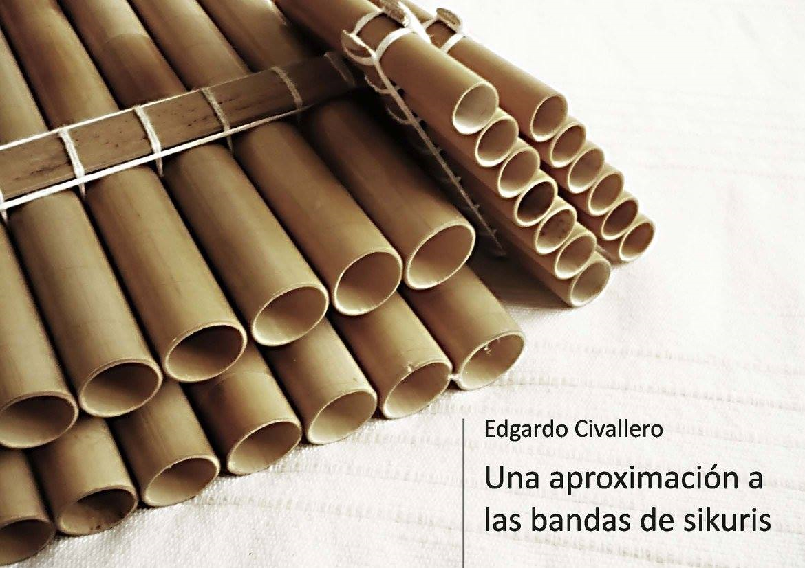

Una aproximación a las bandas de sikuris
Inicio > Libros digitales sobre música. Serie 1 > Una aproximación a las bandas de sikuris
Cómo citar este trabajo: Civallero, Edgardo (2025). Una aproximación a las bandas de sikuris. Edición de archivo. Bogotá: El Zorro de Abajo Editora.
Descargar en PDF.
Este libro presenta un estudio sobre las agrupaciones de flautas de Pan del altiplano meridional andino, abordadas como fenómeno sonoro, social y simbólico. La obra parte de una observación contemporánea —la proliferación de colectivos urbanos de sikuris en América Latina durante las últimas décadas— para reconstruir, con detalle técnico y profundidad histórica, las raíces, la estructura y la cosmovisión que sustentan a este tipo de música comunitaria.
El texto describe cómo los sikuris, intérpretes de sikus, representan la continuidad viva de una de las tradiciones musicales más antiguas del continente. El siku, flauta de Pan andina, surge en la meseta del Collao, alrededor del lago Titicaca, donde los Aymara desarrollaron una compleja cultura del sonido basada en la dualidad, la complementariedad y la participación colectiva. Morfológicamente, el instrumento se compone de dos hileras de tubos cerrados en su extremo inferior y abiertos en el superior, elaborados tradicionalmente con caña y dispuestos en tamaños decrecientes, lo que da al instrumento su silueta triangular característica. Cada tubo produce una sola nota, y la escala completa se distribuye entre las dos hileras —ira y arka—, que funcionan como mitades complementarias: una guía y la otra responde. Esta estructura dual, de raíz cosmológica, impide que una sola persona pueda tocar la melodía completa, lo que convierte a la música del sikuri en una práctica necesariamente comunitaria.
El texto detalla el funcionamiento acústico del instrumento, los tipos de resonadores empleados en algunas variantes, y los efectos buscados por los intérpretes: desde las interferencias intencionadas hasta los desajustes de afinación que generan el característico "sonido rajado" o "aireado". Estas irregularidades, lejos de considerarse defectos, conforman la identidad sonora del género, asociada a la fuerza vital del viento andino. La "imperfección" es parte de la estética: el temblor, el pulso, la vibración son valores musicales y simbólicos, expresiones de la vida colectiva.
Se dedica un extenso apartado a los sikuluriris o constructores tradicionales, quienes elaboran los instrumentos mediante saberes transmitidos oralmente. Cada comunidad posee sus propias takiñas (varillas de medición) y sistemas de proporciones que determinan la afinación de la "tropa", conjunto de flautas de distintos tamaños que integran una banda. En este proceso intervienen no solo criterios acústicos, sino también gestos rituales: el largo de un tubo puede derivar de la sombra de un día específico o del nivel alcanzado por una arena sagrada en su interior. Estas prácticas constrastan con las técnicas contemporáneas de luthería, basadas en la afinación temperada y la estandarización industrial, mostrando cómo los nuevos métodos erosionan las singularidades culturales y la diversidad acústica originaria.
Las bandas de sikuris tradicionales, formadas por decenas de músicos que combinan las hileras ira y arka, alcanzan una densidad sonora única. Su repertorio está ligado a los ciclos agrícolas, al calendario ritual y a las festividades comunales. Cada tropa se distingue por su afinación, por la forma de sus flautas, por la presencia o ausencia de percusión y por la danza que la acompaña, lo que permite identificar el origen geográfico del grupo apenas comienza a tocar. Se documentan ejemplos de tropas emblemáticas, como los jula julas de Oruro —sin percusión, con cañas gruesas y cinco tamaños afinados en octavas— y los k'antus de La Paz —con resonadores abiertos y enormes bombos de doble parche—, cada uno con su estructura instrumental, su técnica y su repertorio propios.
El análisis interpretativo se centra en la técnica del hocket o trenzado sonoro, mediante la cual los músicos alternan notas entre las mitades del instrumento, generando una melodía fragmentada que solo existe en la interacción colectiva. Se subraya que esta práctica encarna principios fundamentales de la cosmovisión andina: dualidad, reciprocidad y equilibrio. Las ejecuciones tradicionales, caóticas a oídos occidentales, constituyen una forma de respiración colectiva en la que el sonido es acto vital más que producto estético. Cada sikuri respira, sopla y camina al ritmo del conjunto, participando en un flujo sonoro continuo donde no existen solistas ni jerarquías.
El texto contrasta esta práctica con las versiones urbanas y profesionalizadas surgidas con la Nueva Canción y los movimientos nativistas de los años sesenta y setenta, que adaptaron los sikus a los escenarios y al público global, fusionándolos con guitarras, charangos y percusiones europeas. Estas adaptaciones, aunque populares, transformaron profundamente el sentido del sikuri: el diálogo entre ira y arka fue sustituido por la ejecución individual, y las afinaciones tradicionales, por la escala temperada. Sin embargo, la autenticidad de la práctica no radica en la pureza del sonido, sino en la relación social que la sustenta: la música del sikuri es inseparable de la comunidad que la produce.
La obra traza además la expansión histórica de las bandas desde la meseta del Collao hacia el resto de los Andes y las ciudades del continente, donde la migración indígena generó nuevas formas urbanas del género. En la actualidad, las agrupaciones de sikuris se han convertido en un movimiento social de alcance continental, vinculado a luchas identitarias, ecológicas y de descolonización cultural. Estas agrupaciones contemporáneas, a pesar de su desvinculación parcial de los contextos rurales originales, conservan el impulso comunitario que define la práctica: soplar juntos como un acto de memoria y resistencia.
En la estructura dual del siku, en el temblor de su aire y en la respiración compartida de los sikuris, se cifra toda una filosofía: la de un mundo que se construye colectivamente, nota a nota, soplo a soplo.